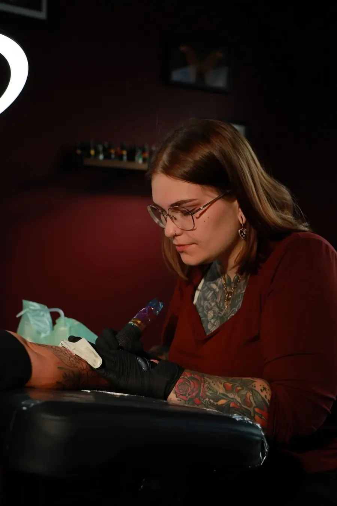
ZaakvoersterAmber
Miss Tattoo Belgium 2022Dotwork en fijn werk. Mandala's, geometrie en bloemen die meebewegen met je lijf.
- Dotwork
- Geometrie
- Botanisch
Fijne dotwork en mandala's, kleurrijke neotraditional, levensecht realisme of een skeletje met een knipoog. Je idee wordt samen uitgetekend, op maat van jouw lijf.
Maandag tot zaterdag, telkens tussen 10 en 17u.
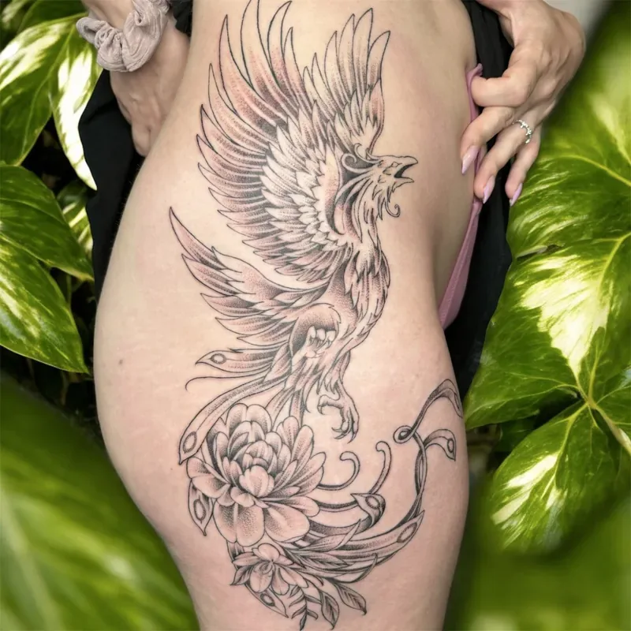
Amber richtte Moonchild eind 2016 op. Na zes jaar ervaring in de zaak van haar mentor opende ze in 2022 haar eigen studio in Melsele.
Je mag hier helemaal jezelf zijn. Tijdens je sessie wordt er gerust gebabbeld, en voor of na zak je even weg in de lounge.
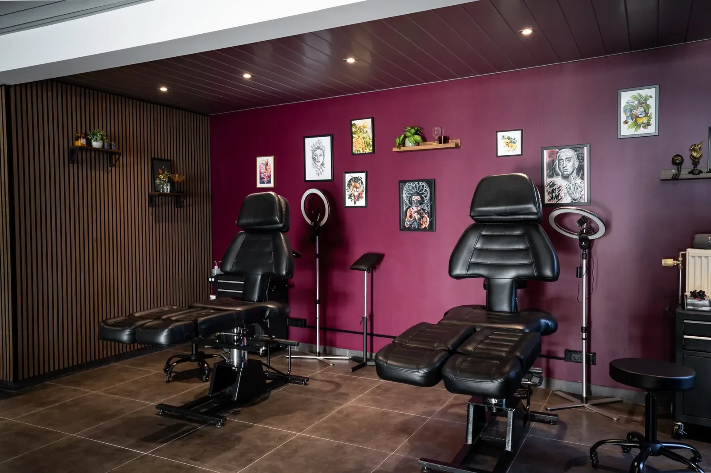
Ieder heeft een eigen stijl en eigen werkdagen. Twijfel je wie bij je idee past? Stuur het door, we zeggen je eerlijk wie er het best mee aan de slag kan.

ZaakvoersterDotwork en fijn werk. Mandala's, geometrie en bloemen die meebewegen met je lijf.
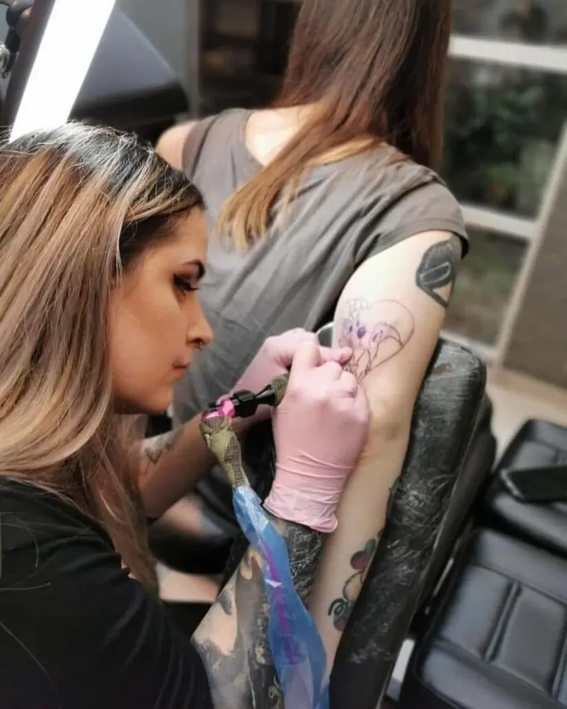
Sterke contouren, rijke kleuren en een flashboek waar je gerust in mag bladeren.
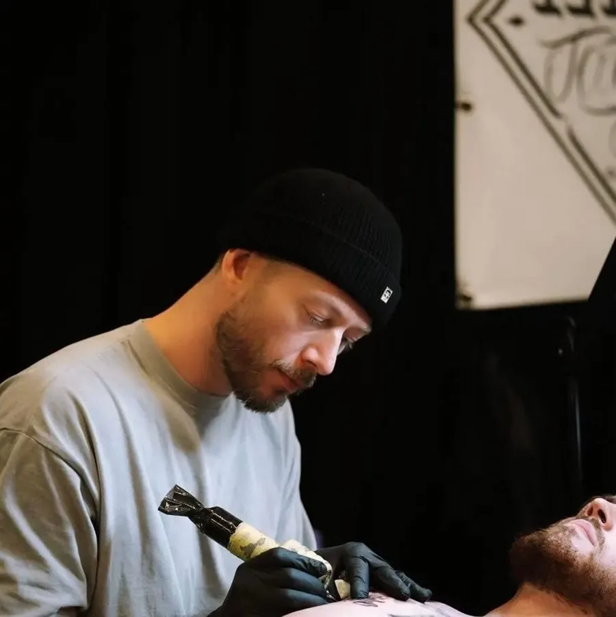
Enkel black & grey. Portretten en dieren met diepte en zachte overgangen.
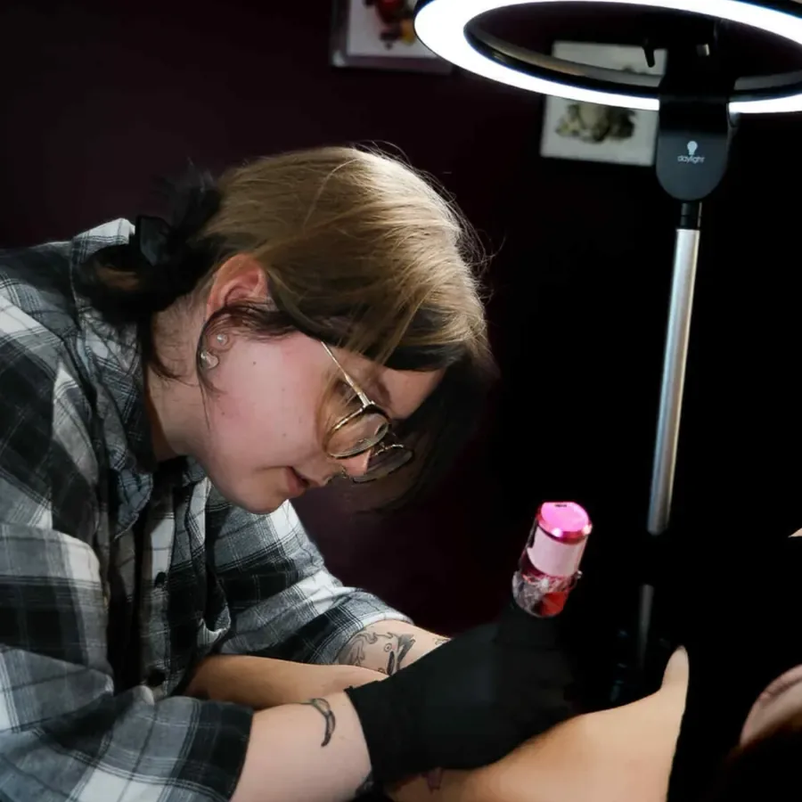
ApprenticeMengt het schattige met het duistere. Haar eigen skeletje duikt vaak op.
Niet iedereen is elke dag in de studio. Stuur dus eerst even een berichtje.
Idee doorsturenEen greep uit het werk van de voorbije maanden. Per artiest vind je nog veel meer op Instagram.
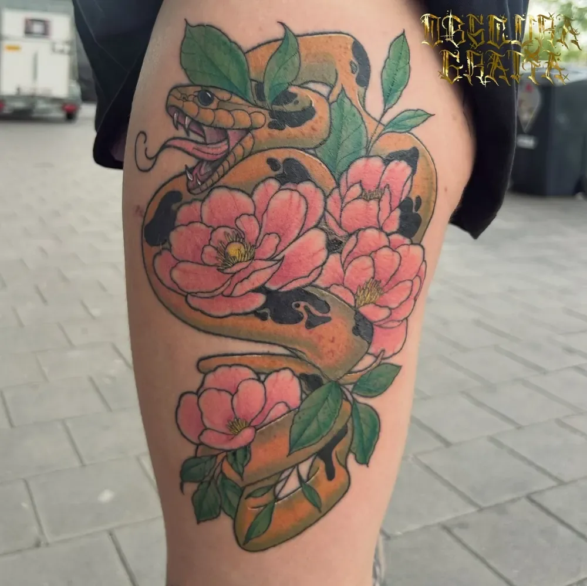
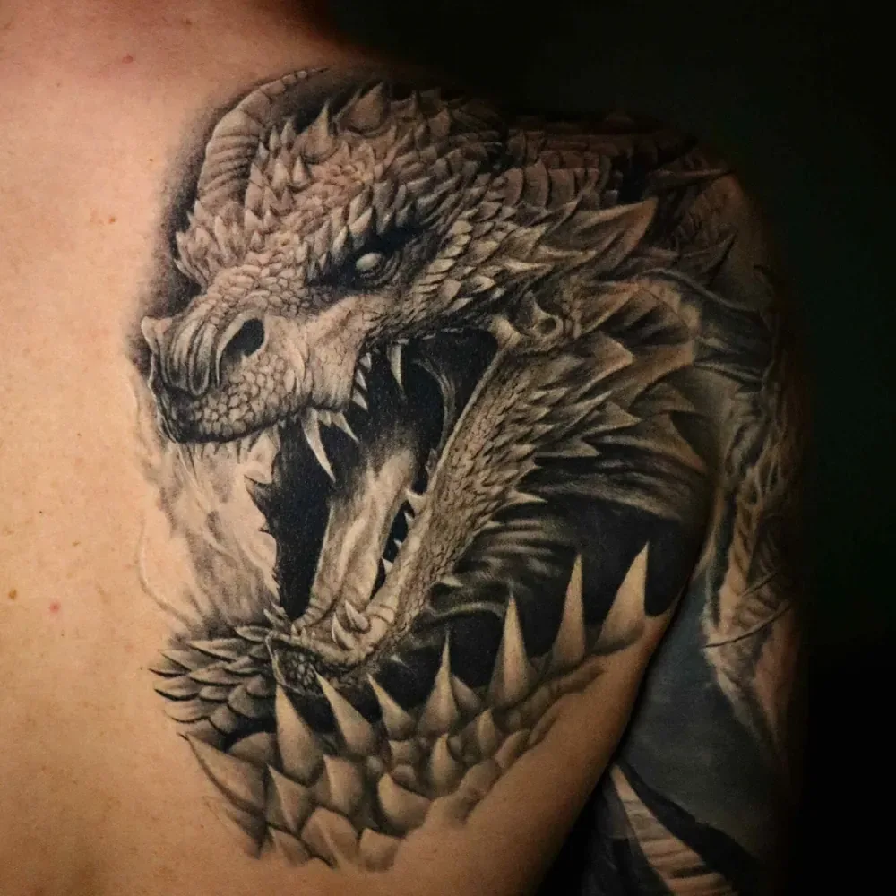
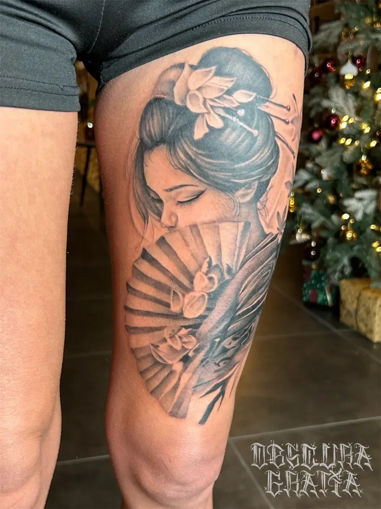
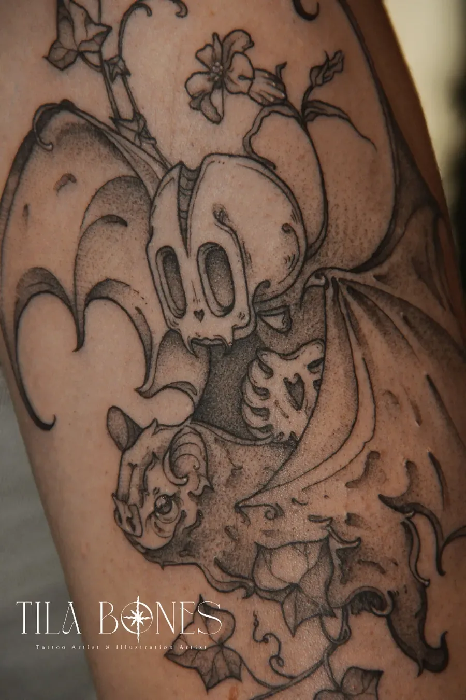
Een foto, een schets of een paar woorden is genoeg om te starten. Weet je niet bij wie je moet zijn? Amber helpt je verder.
Stuur het naar AmberMoonchild is in de eerste plaats een tattoostudio. Maar Amber zet ook permanente make-up, en één keer per maand staat er een piercer klaar.
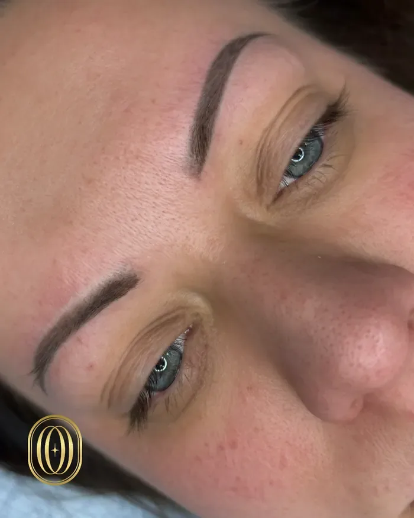
Geen standaardvorm. Amber kijkt naar je gezicht, je huid en wat jij graag wil. Je hebt er een aantal jaren plezier van.
Met hygiënecertificaat en de nodige certificaten voor PMU.
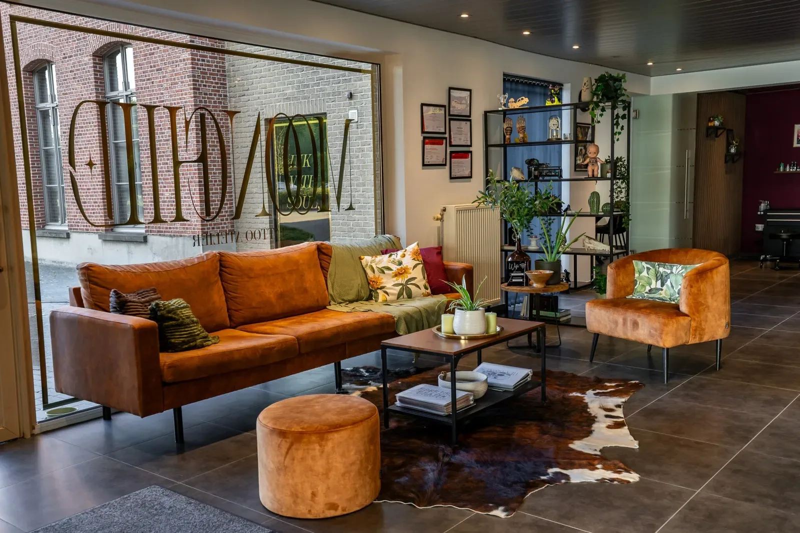
Eén zaterdag per maand staat er een professionele piercer in de studio. Een afspraak maken mag, langskomen tussen 10 en 17u kan ook.
Minderjarig? Kom met een ouder of voogd en een geldige identiteitskaart.
Tijdens een sessie nemen we de telefoon niet op. Een WhatsApp lezen we altijd, en we antwoorden zodra de machine even stilligt.
Enkel op afspraak. Elke artiest heeft eigen werkdagen.
Amber, zaakvoerster
Ik maakte deze demo voor jullie om te tonen wat er kan. Na een kort gesprek maak ik er iets veel persoonlijkers van, helemaal naar jullie wens.
Vrijblijvend. Ik kom langs of we bellen.
Op maat, op jullie eigen domein.
Geen voorschot. Jullie betalen pas als alles klaar is.
Hosting, domeinnaam en kleine wijzigingen, zoals nieuwe openingsuren.
Omdat een voorbeeld meer zegt dan een mail. Zo zien jullie meteen wat er kan, en het kost jullie niets.
Nee. Het gesprek is vrijblijvend. Vinden jullie het niks, dan is het daarmee gedaan.
Na ons gesprek staat jullie site binnen 10 tot 14 dagen online.
Zeker. Jullie domeinnaam kan gewoon blijven, de nieuwe site komt in de plaats van de oude.
Nee, dat doe ik op basis van ons gesprek. Eigen foto's zijn mooi meegenomen, maar niet nodig om te starten.